Everything you saved, finally useful.
Brainamon turns the reels, posts and videos you saved on Facebook, Instagram, Reddit and YouTube into a private library on your PC. It describes them, analyzes the videos, writes notes from them and answers your questions, showing the saves it used.
Your library lives on your PC. AI runs with your own key, only when you ask.
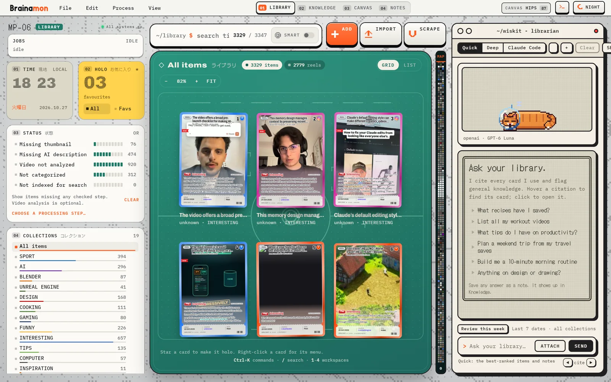
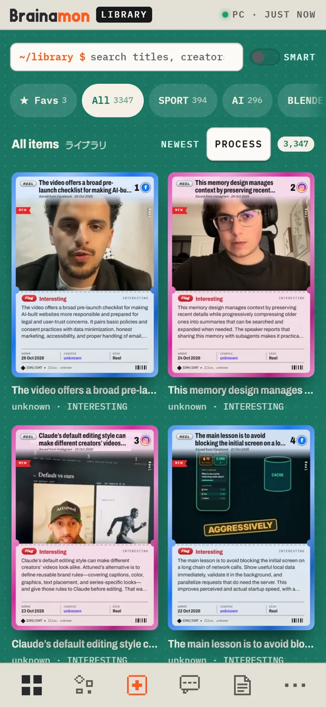
Works with what you already saved on FacebookInstagramRedditYouTubeany web link
One library for every save.
Import your saved lists with the built-in scrapers or a CSV, paste a link, or share from your phone. Each save becomes a card with its thumbnail, caption, creator and category. The status panel shows what is still missing, and one step fills it in: thumbnails, AI descriptions, categories, video analysis and the search index.
Smart search
Type a few words or a whole question. Smart search mixes exact words with meaning, so “knee pain” also finds the mobility reel that never says it.
Fetch link info
Missing a thumbnail or a caption? Brainamon reads the post or the page and fills in what it finds.
Batch processing
Describe, categorize, analyze or index hundreds of saves in one run, with the count and the cost shown before you start.
Ask your library. Get answers with sources.
Wiskit is the assistant inside Brainamon. Ask “What tips do I have on productivity?” and it reads your saves, answers, and links each point to the card it came from. Click a citation and the card opens.
- Sorts a batch of saves into your existing categories.
- Proposes a themed canvas from what it found.
- Saves an answer as a note, or tidies one of yours.
- Reviews your week: what you saved in the last seven days.
Wiskit proposes, you decide. Nothing in your library changes until you click Apply.
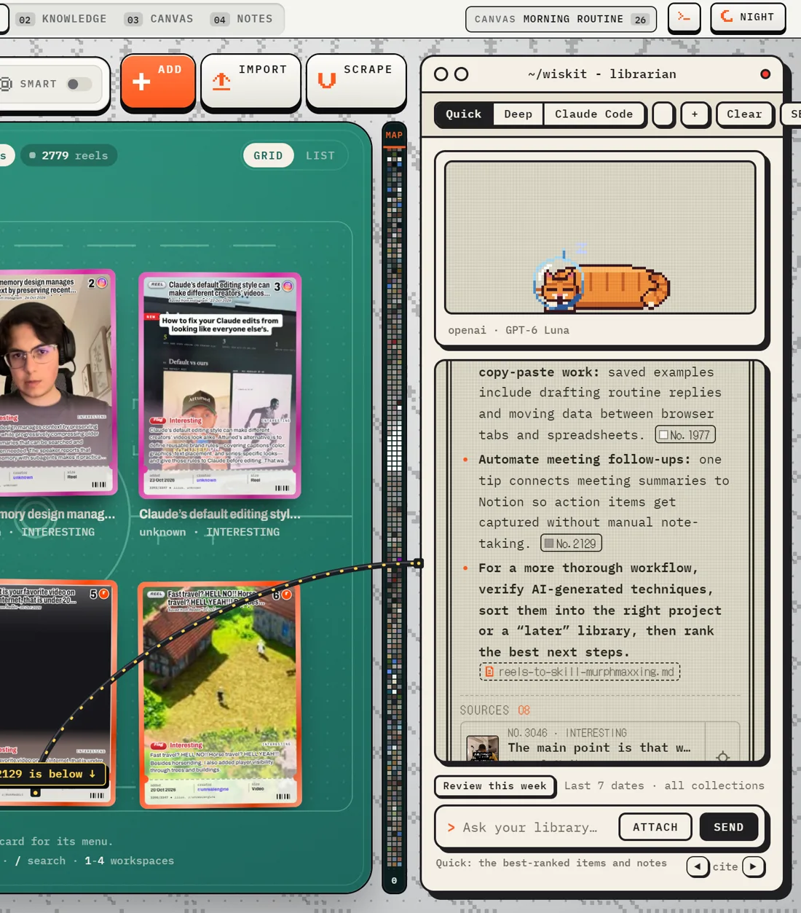
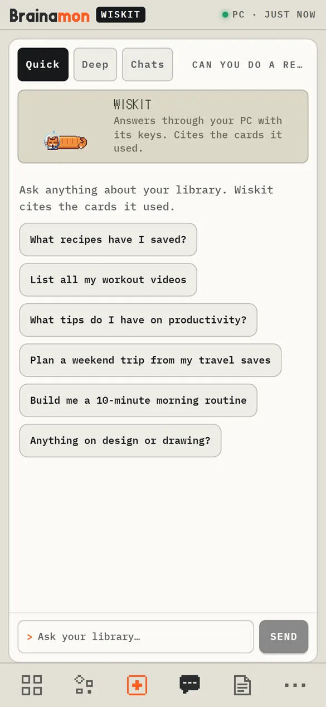
Watch less. Remember more.
Analyze video downloads the reel, pulls key frames, transcribes the audio and writes a report: the subject, the key information, a summary and how you could use it. The transcript and the report stay with the save, ready for search and for Wiskit.
- Long videos are compressed and split for transcription automatically.
- Frames to canvas puts the key frames on a board.
- Video Tools analyzes a video file from your PC too.
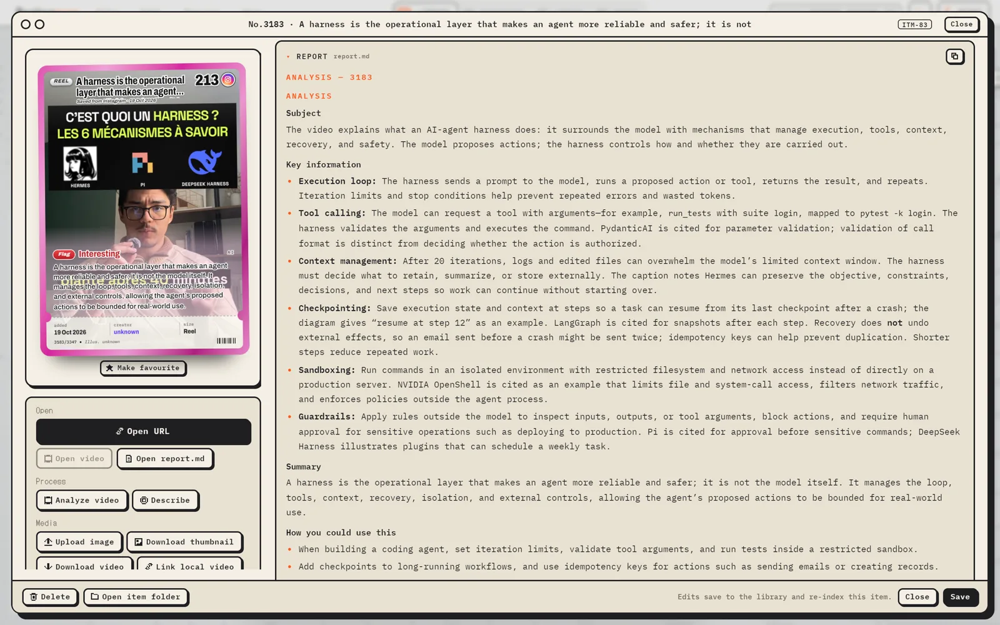
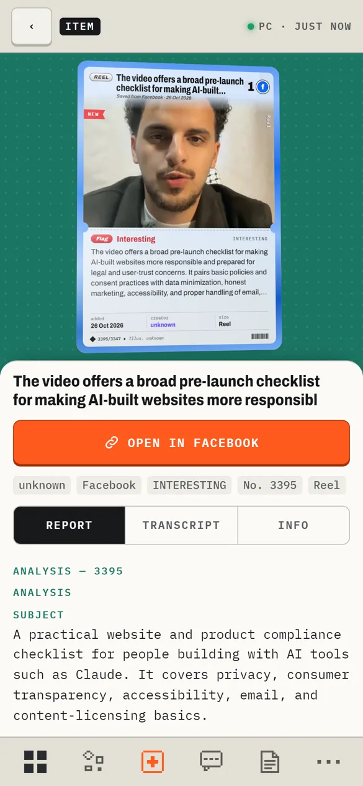
From a pile of saves to notes you keep.
Pick a topic, tick the sources, press Synthesize: the AI reads them and writes one note that lists its sources. Connections watches what you save and points out the topics that have no note yet. Your notes go to your Obsidian vault when you export.
- Topics you follow collect new saves for you.
- Integrate and reorganize folds new sources into an existing note.
- Everything is indexed, so Wiskit reads your notes too.
Real note from the author’s library: a design toolkit synthesized from 110 saved posts.
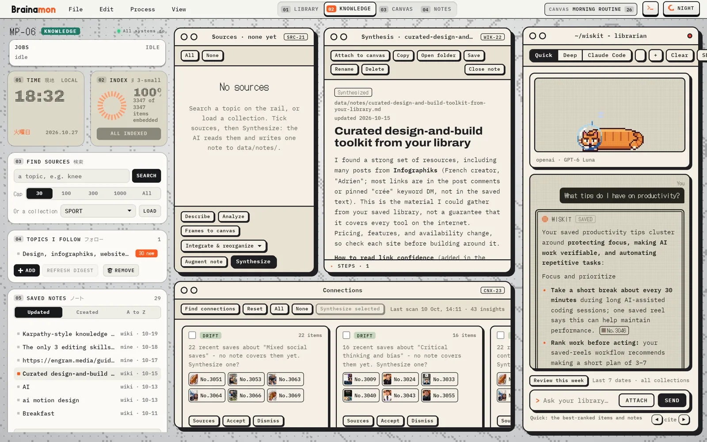
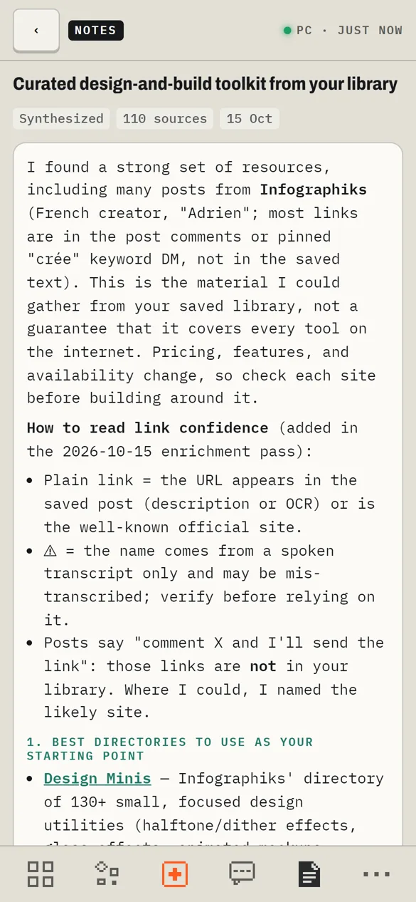
Open your whole library in Obsidian.
Export to Obsidian writes your saves, categories, topics, reports and notes as linked Markdown files in a vault. Open the graph view and your library becomes a map: every save tied to its category, its topics and the notes that cite it.
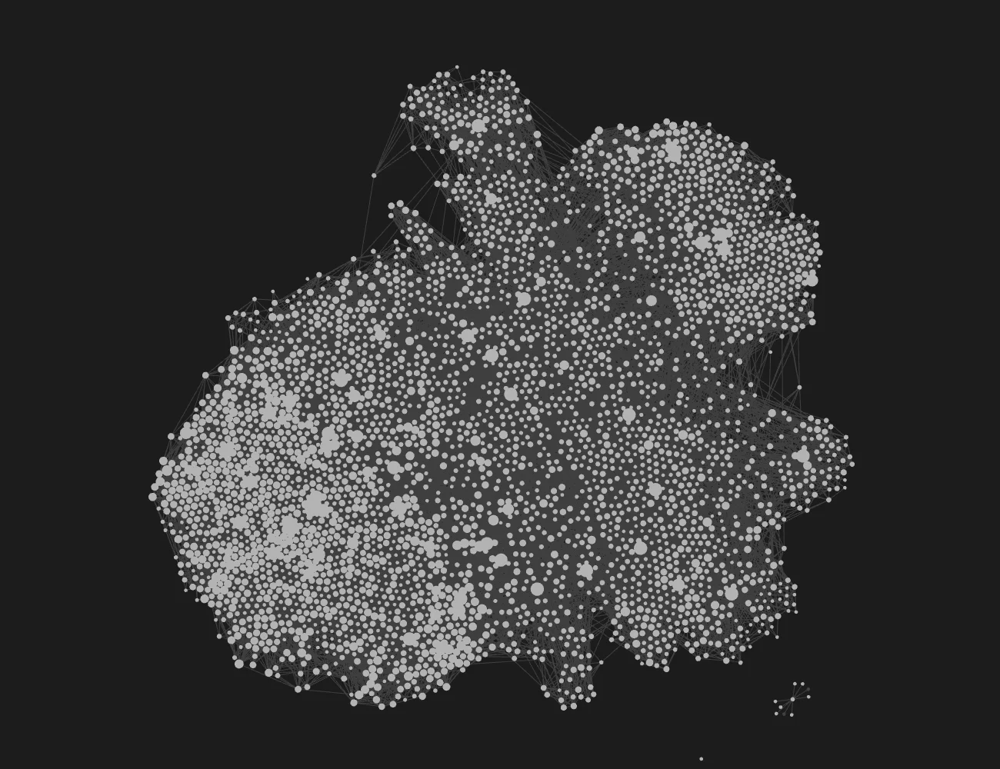
- Plain Markdown you own, readable by any editor.
- Brainamon stays the source: the vault is rebuilt from your library on each export.
- Vault sync keeps an Obsidian vault on the phone up to date, encrypted through Drive.
Works with Claude Code.
Brainamon includes a local MCP server for Claude Code. Connect it and Claude can search your library, read items, reports, notes and canvases, and start jobs like Describe or Fetch link info. Everything stays on your PC.
- Nothing gets deleted. No tool deletes, moves or overwrites anything.
- Changes wait for you. Notes, categories and canvases Claude proposes are applied only when you click in Brainamon.
- Claude Code inside Wiskit. Pick it as Wiskit’s third mode and ask with your own Claude sign-in.
> What did I save about knee prehab? Turn it into a 10-minute routine. ● brainamon · search_library "knee prehab" 14 results ● brainamon · show_item ×5 ● brainamon · read_item_file report.md ×3 ● brainamon · save_note "Knee prehab, 10 minutes" ↳ waiting for your click in Brainamon Here is a 10-minute routine built from 5 of your saves, with the source of each exercise...
Example session. Tool names are the real Brainamon MCP tools.
Your own notes, right beside the library.
Write in a calm editor with highlights, ink, tasks and stamps. Record a voice note and get it back as text. Drop in a screenshot and Digest reads it into a note. Categories keep things tidy, and Wiskit can read everything you write.
- Autosave as you type, on the PC and on the phone.
- AI summary at the top of a long note, kept up to date.
- Add from anywhere: a thought, a link, a picture, a PDF.
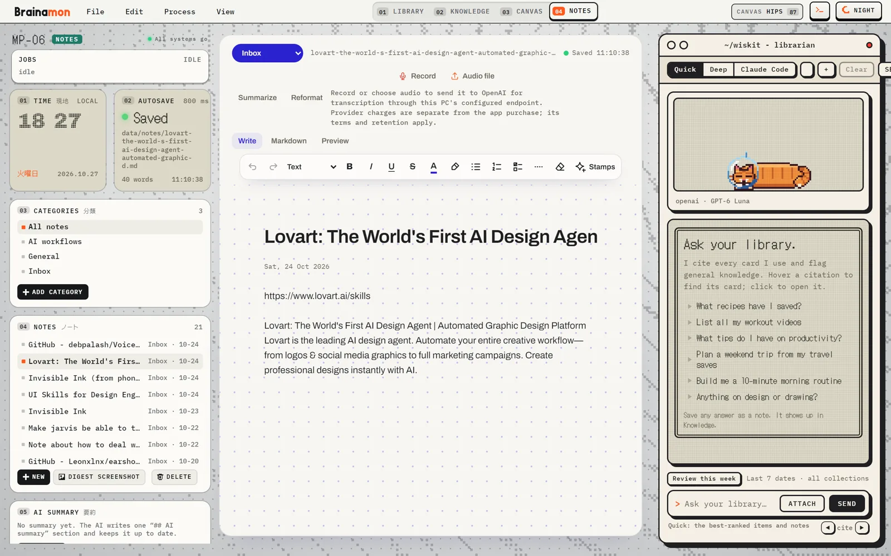
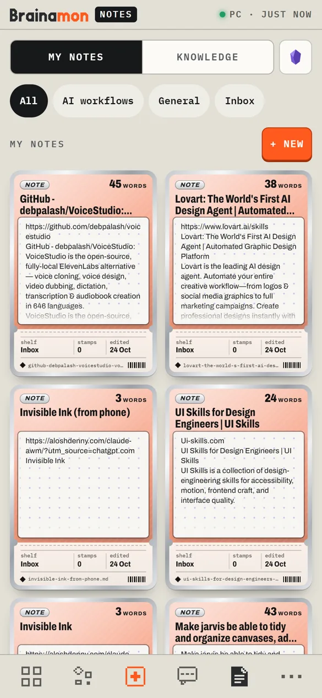
Lay it out on a canvas.
Drag saves, images and notes onto boards: a morning routine, a mood board, a project. Ask Wiskit for a themed canvas and it groups and arranges the cards for you to approve. Your canvases open on the phone too.
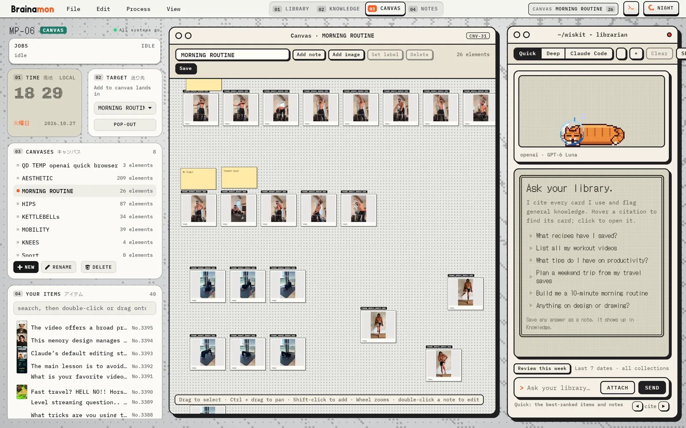
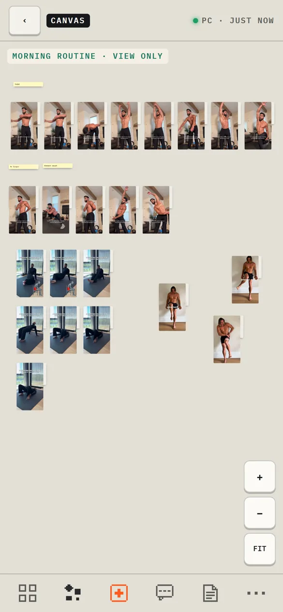
Your library, in your pocket.
The Android app takes the library with you: browse the cards, read reports and notes, open your canvases and ask Wiskit with your own key. Share a link from any app and Brainamon keeps it as a draft until you press Save.
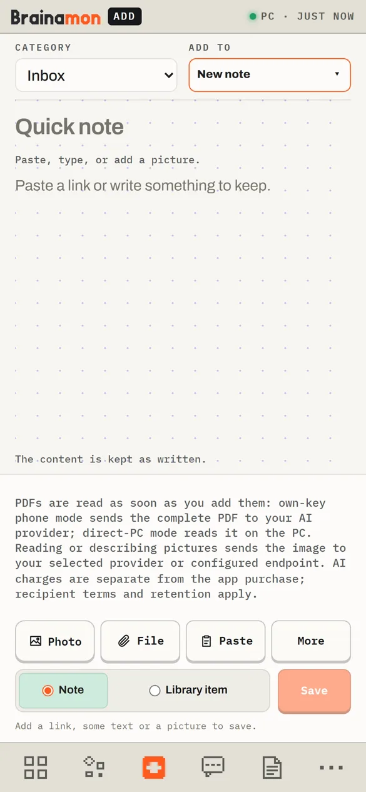
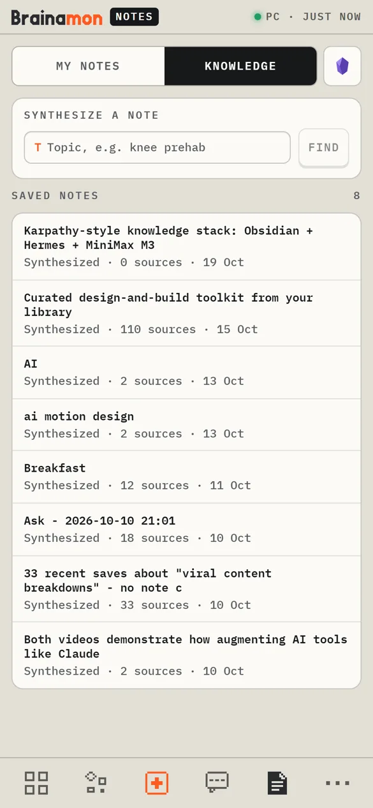
Add·Library·Knowledge·Reports
Synced through your own Google Drive, encrypted.
The PC encrypts the library and uploads it to Brainamon’s hidden app-data folder in your Google Drive. Only your paired devices hold the key, and Brainamon cannot see your other Drive files. Changes you make on the phone travel back to the PC the same way.
- Off until you turn it on. No cloud call before that.
- Pair a phone by scanning a QR code on the PC.
- Phone only? The app also works without a PC, with an optional encrypted backup.
- Recovery lets you restore the library on a new PC.
Private by design.
Brainamon is local-first software. There is no Brainamon account, and your library never passes through a Brainamon server.
Read the privacy policy- Your library stays on your PCNo analytics and no automatic crash reports sent to the developer.
- Your own AI keysAnthropic, OpenAI or a model running on your PC (Ollama, LM Studio). AI is used only when you ask, and provider charges are separate.
- Protected secretsAPI keys and site logins are protected with Windows DPAPI on the PC and Android Keystore on the phone.
- Encrypted sync, off by defaultDrive sync uses only Brainamon’s own hidden folder, encrypted before upload.
And a lot more.
Get Brainamon.
Brainamon for Windows
A one-time purchase, sold on Gumroad. It includes the license key that unlocks phone sync with your PC.
Buy on GumroadBrainamon for Android
Pair it with your PC to carry your whole library, or use it on its own for links and notes.
Get it on Google PlayEnjoying Brainamon?
It is made by one person. A donation helps keep it growing.